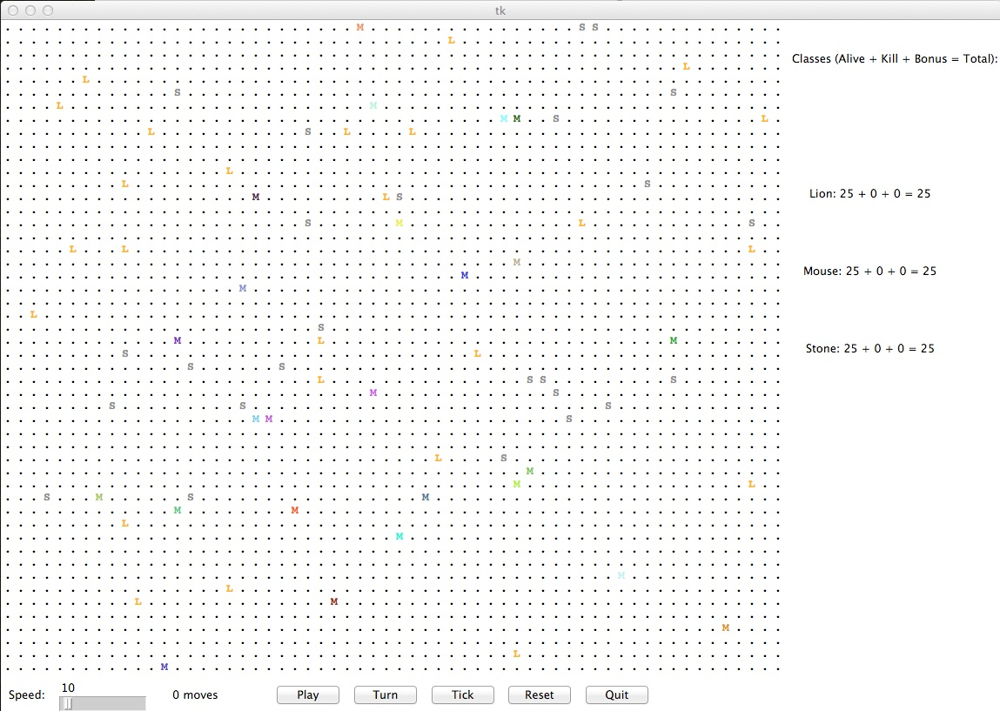

This week you will write a set of classes that define the behaviour of various animals in a 2-dimensional grid world. Your animals will roam the world, and, should they happen upon another animal, will fight to the death. We will first describe some particular animals we want you to create, and then ask you to come up with an animal (or more) of your choosing. Please write or type up your solutions, and hand in a paper copy before the beginning of class on Tuesday. Remember, no late prelabs allowed!
Before you start, let's take a look at this screenshot of the animal world, which is shown below.
What you see here is a grid with mice (labeled 'M'), stones (labeled 'S'), hippos (labeled 'H'), lions (labeled 'L'), and chameleturtles (labeled 'T'). This is their initial placement in the grid world. The Go button starts the simulation; on each round of the simulation, each critter (stones count as critters here, albeit relatively uninteresting ones) is asked which direction it wants to move. On each round, each critter can move one square to the north, south, east, west, or stay at its current location. Critters move around in a world of finite size, but the world is toroidal, as it was in our game of life (going off the end to the right brings you back to the left and vice versa; going off the end to the top brings you back to the bottom and vice versa).
At the beginning of the simulation, each critter is asked to supply an attack and a defense value that it will use for the entire game via its getStats method; these values cannot be changed once they are set. As the simulation runs, animals may collide by moving onto the same location. When two animals collide, they fight using their attack and defense values. If the attacking critter is successful in killing its opponent, the loser is removed from the simulation and the attacker is allowed to move into their spot. Otherwise, both critters remain in the simulation where they were before.
Each critter starts off with 50 health points. Their attack and defense values can be anywhere between 0 and 100, but the sum of both cannot be greater than 100. When two critters fight, the moving critter is registered as the attacking critter and the other is the defender. The defense of the defender is subtracted from the attack of the attacker, and if the result is positive, it is then subtracted from the health of the defending critter. If the defending critter's health reaches or goes below 0, they are are killed. If not, they survive the attack. A 2x bonus is awarded to the defense of a critter whose last move was to stay still. For the first round, every critter that has not yet moved receives this bonus.
| Attacker | ||||
|---|---|---|---|---|
| 100 Attack | 50 Attack | 0 Attack | ||
| Defender | 100 Defense | 0 Damage | 0 Damage | 0 Damage |
| 50 Defense | 50 Damage | 0 Damage | 0 Damage | |
| 0 Defense | 100 Damage | 50 Damage | 0 Damage | |
Each critter you implement must have some specific state and functionality defined. In particular, each critter will implement the following methods, amongst other things:
def getColor(self):
def getMove(self, info):
def getStats(self):
def getChar(self):
For example, a Stone may be implemented with the following functionality, where C and GRAY are defined critter constants:
import critter
import color
class Stone(critter.Critter):
def getStats(self):
return 0, 100
def getColor(self):
return color.GRAY # Stones are drawn GRAY
def getMove(self, info):
return critter.C # Stones never move
def getChar(self):
return 'S' # Displayed with an 'S'
In your lab you will be implementing the following five critters, which must have the following behaviour:
| stats | Attack: 60, Defense: 40 |
| movement behaviour | alternates between EAST and SOUTH in a zigzag pattern (first EAST, then SOUTH, then EAST, then SOUTH,...) |
| character | 'M' |
| stats | attack: 40, defense: 60 |
| color | color.BLUE |
| movement | first go SOUTH steps times, then go WEST steps times, then go NORTH steps times, then go EAST steps times, then stay still steps times (a clockwise square pattern), then repeats |
| character | 'H' |
| stats | attack: 100, defense: 0 |
| color | alternates between color.ORANGE and color.BLACK (first color.ORANGE, then color.BLACK, then ...) |
| movement | looks NORTH, then EAST, then SOUTH, then WEST. If at any point it sees a critter that doesn't display as 'S', 'T', or a number, it attacks. Otherwise, returns a random direction. |
| character | 'L' |
| stats | attack: 50, defense: 50 |
| color | the color of the last critter to attack it; if it hasn't been attacked yet, color.GREEN |
| movement | if any critters it can see anywhere within its sights aren't other Chameleoturtles, Stones, or Point Caches, stays still. Otherwise, moves NORTH |
| character | the character of the last critter to attack it; if it hasn't been attacked yet, 'T' |
| stats | you decide |
| movement behaviour | you decide |
| character | you decide |
You will decide the behaviour of your own critter. Your critter should be named after yourself. Please use your first name followed by your last initial. For example, my critter would be named CynthiaT.
Part of your lab grade will be based upon writing creative and non-trivial behaviour for your own critter. The following are some guidelines and hints about how to write an interesting critter.
When a critter moves, it has access to some important but limited information that it may wish to use to guide its movement behaviour. For example, it has access to its current x and y coordinates, as well as the width and height of the grid world. It can also find out what kind of critters are to its east, west, north, south, north-east, north-west, south-east, or south-west if there are any critter there at all. Note that you can see diagonally, but you cannot move diagonally (in one step).
3) If you are fighting a Mouse, what stats should you have in order to always win if the mouse is attacking? What if you are attacking the mouse? How about against an Hippo?
Your critter can use any character you like as its display character. In fact, critters are asked what display character to use on each round of the simulation, so you can have a critter that displays itself differently over time.
Although your stats cannot be changed once they are set in the beginning, not all of your critters have to be identical. Some clever manipulation of class variables and a decent game plan will put you far ahead of other, less-sophisticated critters.
6) Describe one way that critters of your type could coordinate - use class variables to have them work together.
If you followed the Honor Code in this assignment, write the following sentence attesting to the fact at the top of your homework.
I affirm that I have adhered to the Honor Code in this assignment.